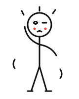
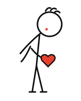
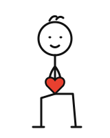

有些话，想好好写给你。
周六晚上说好七点去接你，我打游戏忘了时间，八点才出门。
你在楼下等了一个小时，给我打了三个电话，我一个都没接。

是我没把和你的约定放在心上。
那天风很大，你一个人站在楼下，电话一次次打过来，一直没人接。
那一个小时，你一定又冷又着急，还担心我是不是出了什么事。
你可能也在想：在我心里，你排在第几位。
让你有这种感觉，是我做的事造成的。
以后约好的时间，我提前半小时定闹钟，出门前给你发一句「出发啦」。

这周六，还是那家店门口，这次换我先到，等你。
你不用急着回我。想聊的时候，我都在。
—— 阿哲

小雨，信写完了。
接下来，你想怎样都可以。